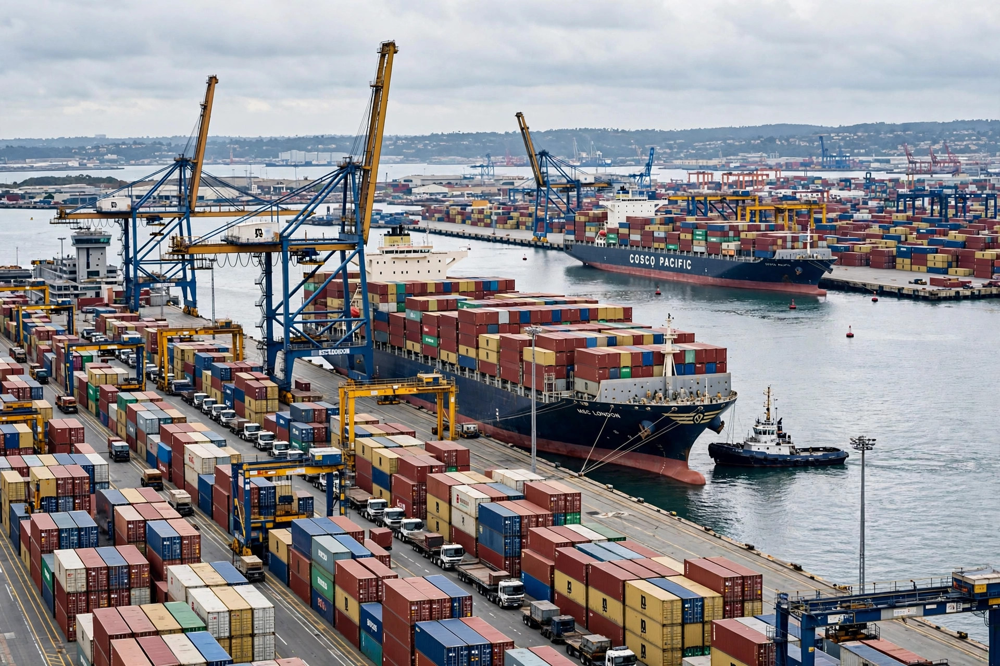

A free trade agreement (FTA) is a treaty between two or more countries to reduce or eliminate barriers to trade, such as tariffs and import quotas, among the signatories. FTAs may be bilateral or multilateral and often also cover services, investment, intellectual property, and government procurement.

Unlike a customs union, an FTA's members keep their own external tariffs, so agreements include rules of origin to prevent goods entering through the lowest-tariff member. Examples include the United States–Mexico–Canada Agreement (USMCA, successor to NAFTA), the EU's many bilateral deals, and the Comprehensive and Progressive Agreement for Trans-Pacific Partnership (CPTPP). Under World Trade Organization rules, FTAs are an exception to the most-favoured-nation principle, permitted if they cover substantially all trade.
Economists generally find FTAs raise trade and growth among members but can divert trade from more efficient non-members. Politically, agreements are debated for their effects on jobs, regulation, and national sovereignty.